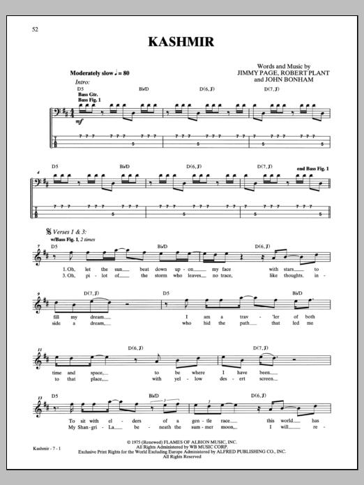
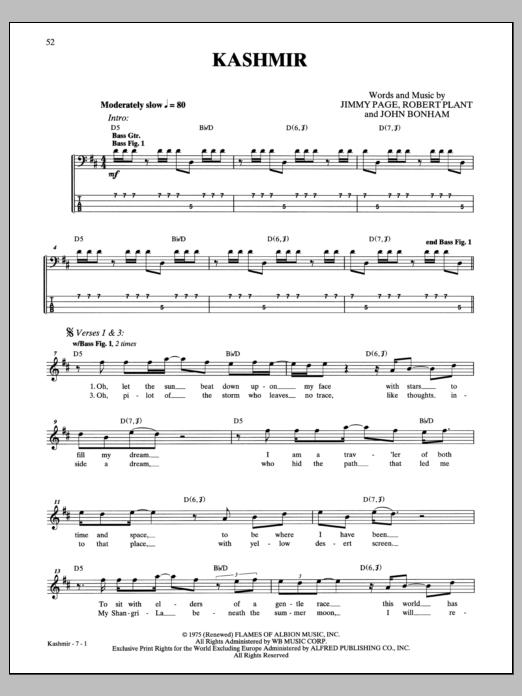

Nuevos Cursos
Tecnica de Slap
Como tocar slap en el bajo eléctrico. Para comenzar con la aplicación del slap sobre algo mas real y que no se quede solamente en el estudio de ejercicios sobre esta técnica en esta ocasión les muestro alguna líneas de bajo con técnica de slap muy utilizada por los bajistas ya que el slap tiene un sonido muy caracteristico. La técnica de slap aplicada al bajo electrico se le atribuye al bajista estadounidednse larry graham quien aplico esta técncica por primera vez al encontrarse tocando en su iglesia y a falta de baterista comenzo a tratar de suplir los golpes de la bateria en el bajo y a la vez tratar de tocar su línea de bajo, como resultado nace esta técnica que ya era aplicada por contrabajistas de los años 50s. como tocar slap en el bajo. En el video Curso de bajo líneas de bajo con técnica de slap podrás aprender esta técnica, la cual se divide basicamente en dos golpes con la mano derecha, podemos tocar las cuerdas “golpeando” con nuestro dedo pulgar y la otra posibilidad que tenemos es “jalar” las cuerdas con nuestro dedo índice de la mano derecha, como resultado tenemos dos sonido diferentes para ejecuttar las notas, comunmente tocamos las notas mas graves golpeando las cuerdas 3 y 4 del bajo con el dedo pulgar y las jnotas que se encuentran en las cuerdas 1 y 2 las tocamos “jalando” la cuerda con el dedo índice, aunque esto no es una regla sirve como un buen punto de partida para empezar a aplicar esta técnica sobre el bajo. Además en esta lección aparece el uso de las “gosth notes” o notas fantasma, esta forma de tocar las notas es muy común cuando aplicamos la técnica de slap ya que permite tener un sonido mas parecido a una percusión, las “gosth notes” o notas fantasmas tambien son aplicables a las líneas de bajo con técnica de dedos, espero que les sirvan estas líneas de bajo para comenzar a tocar con slap. Lecciones de bajo en video.
Biblioteca de Partituras
 


En esta biblioteca podras encontrar las mas destacadas partituras de bajo del mundo donde podras leer las lineas de bajo que estabas buscando. Desde música clasica, rock, pop, metal, latino, reagge, etc... un sin fin de categorias donde nuestro catalogo intentara saciar tu sed de conocimiento musical con un amplio espectro de partituras. Hay de diferentes niveles: inicial, intermedio y avanzado. Encontra tambien nuestra nueva sección de tablaturas con la mas variada cantidad de canciones nacionales e internacionales de tus artistas favoritos, también podras encontrar links de como interpretarlas para los niveles mas básicos.